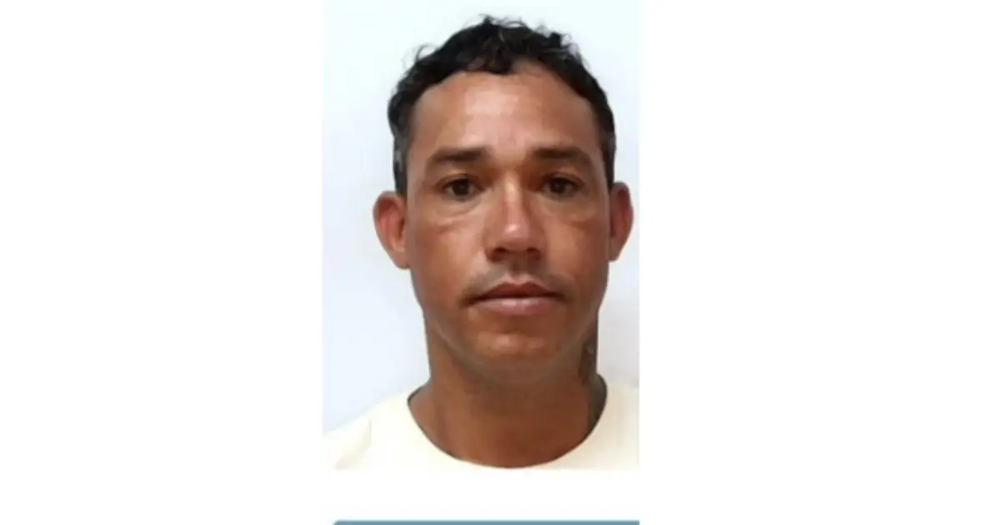

Repórter Davi
Notícias de Feira de Santana e Região
Repórter Davi
Notícias de Feira de Santana e Região
Publicado em 02/03/2026

Foto: Redes Sociais
Renato Souza do Carmo morreu na tarde desta segunda-feira (2) após se envolver em um grave acidente de trânsito na BR-407, nas proximidades do Posto Alvorada, no município de Jaguarari, região de Senhor do Bonfim.
Renato era o principal suspeito de assassinar Eliane Matos Santana Pedreira, de 45 anos, e agredir o esposo dela, um idoso de 72 anos, durante a madrugada desta segunda (2), na residência do casal, localizada na Estrada da Cavalaria, distrito de Maria Quitéria, zona rural de Feira de Santana.
De acordo com informações apuradas pelo Acorda Cidade, o suspeito estaria se deslocando pela BR-407, no sentido Juazeiro/Senhor do Bonfim, conduzindo o veículo, um Renault Kwid, furtado do casal que sofreu as agressões. Ainda segundo à polícia, ele teria passado pelo distrito de Flamengo, onde abasteceu o carro e saiu do local sem efetuar o pagamento.
A situação foi comunicada às autoridades, que passaram a acompanhar o deslocamento do veículo. As diligências foram realizadas pela Delegacia Especializada de Repressão a Furtos e Roubos de Feira de Santana (1ªCoorpin), unidade vinculada ao Deic (Departamento Especializado de Investigações Criminais) em ação integrada com a 19ª Coordenadoria Regional de Polícia do Interior (Coorpin/Senhor do Bonfim).

Renato Souza do Carmo | Foto: Redes Sociais
Durante a fuga, Renato trafegava em alta velocidade quando, nas imediações do km 104 da rodovia, tentou realizar uma ultrapassagem e acabou colidindo frontalmente com uma carreta.
Com o impacto, ele foi arremessado para fora do veículo e morreu ainda no local. O motor do automóvel foi projetado, atingindo lateralmente a viatura da DRFR. Os policiais não se feriram e houve apenas danos materiais.